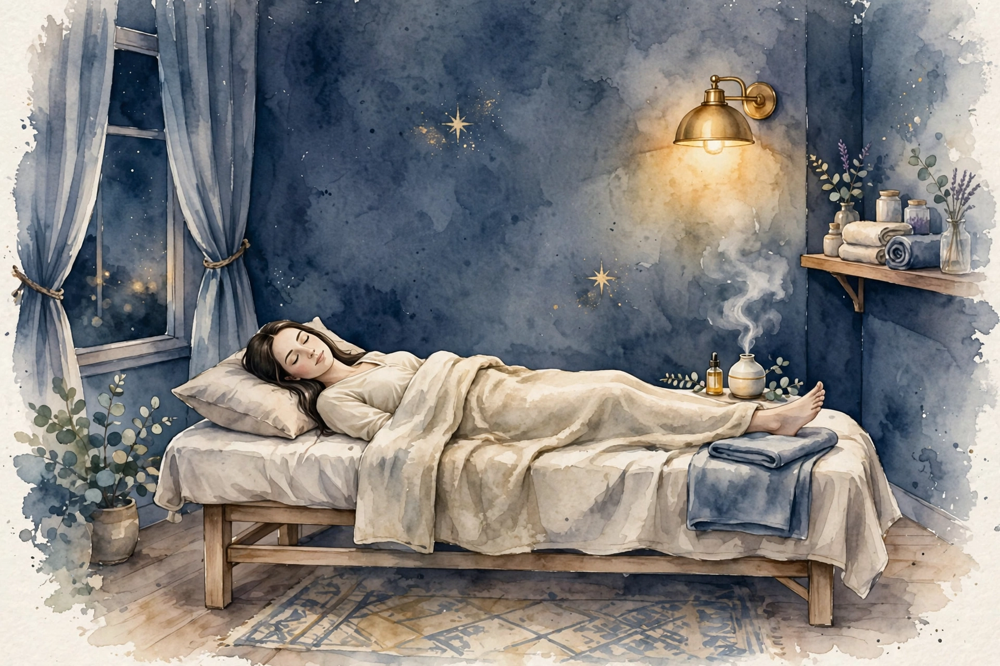

女性専用 ／ オイルマッサージ × 美容整体
一日の終わりに、
肩と心をほどく場所を、
仙台に。
近日開院予定（受付は開始次第、このサイトとLINE公式でお知らせします）
美容整体ステラ・アルデバランは、仙台・国分町／一番町エリアで開院準備中の女性専用サロンです。仕事帰りの夕方から夜にかけて、オイルマッサージと美容整体で、肩こりや首の重さ、姿勢の崩れといった日々のお悩みに寄り添います。
- 女性専用 女性のお客様のみご利用いただけます
- 90分 10,000円 分かりやすい単一価格です
- 月〜土 17:00〜22:00（予定） お仕事帰りに立ち寄れる時間帯です

こんなお悩みはありませんか
当てはまるものが多いほど、毎日の姿勢や過ごし方に負担が積み重なっているサインかもしれません。まずはチェックしてみてください。
- 夕方になると肩が重く、手で揉みたくなる
- スマートフォンを見る時間が長く、首が前に出ている気がする
- デスクワークで背中が丸まり、姿勢が気になる
- 脚のむくみが気になり、靴がきつく感じる日がある
- 頭が重く感じて、すっきりしない日が続いている
- 冷えが気になり、手足が冷たいことが多い
- 眠りが浅く、朝起きても疲れが残っている感じがする
- 顔のむくみや、フェイスラインのもたつきが気になる
お悩みごとの詳しい解説とセルフケアは、でご紹介しています。
施術の様子
アルデバランの施術は、オイルマッサージと美容整体を組み合わせた90分です。当日のお体の状態をお聞きしながら、力加減や重点的にほぐす部位を調整します。
01
カウンセリング
その日のお悩みや体調、気になる部位をお聞きします。姿勢の様子も一緒に確認し、施術の進め方をご相談します。
02
オイルマッサージ
オイルを使って背中・肩・脚などを流れるようにほぐします。こわばりやすい肩や首まわりは、様子を見ながら丁寧に圧を調整します。
03
美容整体
骨盤や背骨まわりのバランスに目を向けながら、姿勢が整いやすい状態を目指します。無理に強い力を加える施術は行いません。
※ 当サロンでは鍼灸は行いません。施術は医療行為ではなく、リラクゼーションと美容を目的としたものです。
料金・営業案内
料金はシンプルな単一価格です。コース選びで迷うことなく、当日のお悩みに合わせて内容を組み立てます。
90分 ／ 10,000円（税込）
近日開院予定（受付は開始次第、このサイトとLINE公式でお知らせします）- ・ 料金は90分10,000円の単一価格です
- ・ 担当セラピストは開院時にご案内します
- ・ お問い合わせ用LINE公式アカウントを開設しました
| 店名 | 美容整体ステラ・アルデバラン |
|---|---|
| 場所 | 仙台・国分町／一番町エリアで開院準備中（施設・住所は決まり次第ご案内します） |
| 対象 | 女性専用 |
| 施術内容 | オイルマッサージ、美容整体（鍼灸は行いません） |
| 料金 | 90分 10,000円（単一価格） |
| 営業時間（予定） | 月〜土 17:00〜22:00 ／ 日曜休み（いずれも予定です） |
| 予約受付 | 近日開院予定のため、現在は受付を行っていません。受付は開始次第、このサイトとLINE公式でお知らせします |
| お問い合わせ | お問い合わせ用LINE公式アカウントを開設しました |
姉妹店のご案内
ステラシリーズは、星の名前を冠した女性専用サロンです。営業中の姉妹店は各店のサイトでご案内しています。
営業中の姉妹店
開院準備中の姉妹店
- 美容整体ステラ・リゲル（東京）開院準備中
- 美容整体ステラ・カペラ（名古屋）開院準備中
- 美容整体ステラ・アンタレス（福岡）開院準備中
- 美容整体ステラ・デネブ（札幌）開院準備中
- 美容整体ステラ・プロキオン（横浜）開院準備中
- 美容整体ステラ・アルデバラン（仙台）開院準備中
このサイトです - 美容整体ステラ・レグルス（広島）開院準備中
- 美容整体ステラ・ベテルギウス（大宮）開院準備中
開院のお知らせについて
美容整体ステラ・アルデバランは近日開院予定です。開院日と受付の開始は、このサイトとLINE公式でお知らせします。お問い合わせ用LINE公式アカウントを開設しました。開院まで、でセルフケアの読み物をお届けします。
セラピストとして働くことに興味のある方は、をご覧ください。
LINE公式アカウントでお問い合わせ
開院・受付開始のお知らせもLINEでお届けします
お悩み別ページ
気になるお悩みを選ぶと、要因の整理・セルフケア・受診の目安をまとめた解説ページをご覧いただけます。解説は一般的な情報であり、診断や治療を行うものではありません。
肩こり
夕方に重くなる肩、揉んでも戻ってしまう張り。デスクワークや姿勢との関わり、毎日のセルフケアの組み立て方を解説します。
首こり
スマートフォンやパソコンで前に出た頭を支える首の負担。首まわりの仕組みと、無理のないほぐし方・整え方を解説します。
腰の重さ・腰痛
夕方に重くなる腰、冬に目立つこわばり。座り姿勢と冷えなど要因を整理し、膝抱えストレッチなど毎日のセルフケアを解説します。
眼精疲労・目の疲れ
書類と画面の行き来で重くなる目元。ピント調節の負担や乾燥、明るさなど要因を整理し、蒸しタオルや遠くを見る休憩など毎日のセルフケアを解説します。
姿勢・猫背が気になる
雪道や職場の姿勢で丸くなる背中、前に出る頭。重心線の考え方など猫背の仕組みを整理し、胸を開くストレッチや壁立ちチェックなどセルフケアを解説します。
寝つき・眠りの浅さ
足の冷えや体のこわばりで眠れない、眠りが浅い。体内時計と深部体温の仕組みを整理し、安眠・神門など眠りのツボや足元の温め方などセルフケアを解説します。
脚のむくみ・だるさ
事務の座位と冷えで張る夕方の脚。要因を整理し、ふくらはぎを動かす運動や足湯など毎日のセルフケアを解説します。
冷えが気になる
東北の冬の冷え込みと、夏のやませ。季節をまたぐ冷えの要因を整理し、足湯や湯船など毎日のセルフケアを解説します。
頭の重さ・すっきり感
寒い日に重くなる頭、こめかみの重だるさ。やませの冷えや姿勢など要因を整理し、こめかみをほぐすセルフケアや受診の目安を解説します。
体のだるさ
寒い時期に増す体の重さ、抜けないだるさ。冷えや座り仕事など要因を整理し、湯船や温めのセルフケア、受診の目安を解説します。
よくある質問
開院前にいただくことの多いご質問をまとめました。受付に関する最新情報は、このサイトでお知らせします。
いつ開院しますか
近日開院予定です。具体的な開院日は決まり次第、このサイトとLINE公式でお知らせします。現在は予約の受付を行っていません。
場所はどこですか
仙台・国分町／一番町エリアで開院準備中です。施設と住所は確定次第ご案内します。それまでの間、所在地に関する個別のお問い合わせにはお答えできない場合があります。
女性専用ですか
はい、女性のお客様専用のサロンです。
料金はいくらですか
オイルマッサージと美容整体を組み合わせた90分コースが10,000円の単一価格です。時間や部位によって料金が変わることはありません。
どんな施術ですか。鍼は使いますか
オイルを使ったマッサージと、姿勢のバランスに目を向ける美容整体を組み合わせた施術です。鍼灸は行いません。また、施術は医療行為ではなく、病気の診断や治療を目的としたものではありません。
営業時間を教えてください
月〜土の17:00〜22:00、日曜休みを予定しています。開院時に改めて確定した時間をご案内します。
担当のセラピストは分かりますか
担当セラピストは開院時にご案内します。当サロンは業務委託スタッフ主体の運営のため、個人プロフィールは掲載していません。
予約や問い合わせはどうすればいいですか
受付は開始次第、このサイトとLINE公式でお知らせします。お問い合わせ用LINE公式アカウントを開設しました。下のボタンから友だち追加してお問い合わせください。
妊娠中でも施術を受けられますか
体調や時期によって対応が異なります。開院後の受付開始時に、あらためてご案内します。ご不安な場合は、かかりつけ医への確認をおすすめします。
痛い施術ですか
力加減はお声を聞きながら調整します。無理に強い力を加える進め方はしませんので、施術中も遠慮なくお伝えください。
経絡・経穴ガイド
東洋医学で体のエネルギーの通り道とされる「経絡」と、その上にある要所「経穴（ツボ）」の基礎知識です。当サロンの施術では鍼は使いませんが、経穴の位置を目安に、手や指でやさしく圧をかけるアプローチを取り入れています。ここでの説明は伝統的な考え方の紹介であり、特定の症状への効果を保証するものではありません。
経絡とは
経絡は、東洋医学の古典に基づく考え方で、全身を巡る流れの道筋を指します。正経と呼ばれる主要な経絡は12本あり、それぞれ内臓の働きと結びつけて考えられてきました。経穴は経絡上に点在する要所で、古典では360以上が知られています。現代では、経穴の位置は骨や筋肉の目印からの距離で表す方法が広く使われています。
施術でよく触れる経穴
| 肩井（けんせい） | 肩の稜線のほぼ中央、首の付け根と肩先の中間あたりにある経穴。肩まわりの施術で目安にする代表的な点です。強く押しすぎず、呼吸に合わせてやさしく圧をかけます。 |
|---|---|
| 天柱（てんちゅう） | 首の後ろ、髪の生え際の高さで、太い筋肉の外側のくぼみにある経穴。首の後ろ側をほぐす際の目安になります。 |
| 風池（ふうち） | 後頭部の下、耳の後ろの骨と首の筋肉の間のくぼみにある経穴。天柱よりやや外側に位置します。頭を支えるように、指の腹で包むように触れます。 |
| 合谷（ごうこく） | 手の甲側、親指と人差し指の骨が合う部分のやや人差し指寄りのくぼみにある経穴。手軽に触れられるため、セルフケアでも使われることが多い点です。 |
| 曲池（きょくち） | 肘を曲げたときにできるしわの、外側の端にある経穴。腕まわりの施術の目安になります。 |
| 足三里（あしさんり） | 膝のお皿の下、外側のくぼみから指幅4本ほど下にある経穴。脚の施術でよく知られる点の一つです。 |
| 三陰交（さんいんこう） | 内くるぶしの頂点から指幅4本ほど上、すねの骨の後ろ際にある経穴。脚の内側のラインをたどる際の目安です。 |
| 湧泉（ゆうせん） | 足の裏、指を曲げたときにくぼむ部分にある経穴。足裏へのアプローチの目安になります。 |
ご自宅で経穴に触れるときの注意
- 押す力は「気持ちよい」と感じる程度までにとどめ、痛みを我慢して強く押さないでください。
- 1か所につき、ゆっくり呼吸しながら5秒ほど圧をかけ、数回繰り返すくらいが目安です。
- 皮膚に傷や炎症がある場所、体調がすぐれないときは避けてください。
- しびれや強い痛みなど気になる症状がある場合は、セルフケアで様子を見続けず、医療機関に相談してください。
※ 経穴の位置は体の目印からの目安です。個人差があるため、位置の感じ方には幅があります。
セラピスト募集
美容整体ステラ・アルデバラン（仙台・国分町／一番町エリア）では、開院に向けて業務委託のセラピストを募集しています。夕方から夜の時間帯を中心に、あなたのペースで働ける形を一緒に作っていきましょう。
| 雇用形態 | 業務委託 |
|---|---|
| 報酬 | 施術料の60％ |
| 勤務地 | 仙台・国分町／一番町エリア（施設は開院準備中です） |
| 働く時間 | 月〜土 17:00〜22:00（予定）の範囲で、希望に合わせて設定できます |
| 対象 | 女性セラピストを募集しています（女性専用サロンのため） |
未経験者は研修無料
未経験の方も歓迎します。施術の基礎から学べる研修を無料でご用意していますので、安心してスタートできます。
経験者は技術をそのままメニューに
経験者の方は、お持ちの技術をそのままメニュー化できます。これまで磨いてきた手技を、そのままお客様に届けてください。
時間は希望に合わせて
働く時間は希望に合わせて設定できます。週に数日だけ、夜の数時間だけといった働き方もご相談ください。
Stella Aldebaran — Beauty Seitai Salon for Women
Stella Aldebaran is a women-only salon preparing to open in the Kokubuncho / Ichibancho area of Sendai, Japan. We combine oil massage with beauty seitai (a Japanese body-balancing treatment) in a single, simple 90-minute session.
| Salon | Beauty Seitai Stella Aldebaran — women only |
|---|---|
| Location | Kokubuncho / Ichibancho area, Sendai (preparing to open; address to be announced) |
| Treatment | Oil massage and beauty seitai. We do not offer acupuncture. Treatments are for relaxation and beauty care, and are not medical treatment. |
| Price | 90 minutes — ¥10,000 (single flat rate, tax included) |
| Hours (planned) | Monday to Saturday, 5:00 p.m. – 10:00 p.m. Closed on Sundays (planned) |
| Therapists | Our therapists will be introduced when the salon opens. |
| Contact | Our official LINE account for inquiries is now open. Please add us as a friend using the button below to contact us. |
About the treatment
Each session begins with a short consultation about how your body feels that day — stiff shoulders, a heavy neck, tired legs, or posture concerns. The oil massage works over the back, shoulders and legs with pressure adjusted to your comfort, and the beauty seitai part focuses on the balance around the pelvis and spine, aiming for a posture that feels naturally upright. Strong, painful techniques are not used.
Sister salons
Stella Aldebaran is part of the Stella series of women-only salons, each named after a star. Our sister salons in Umeda (Osaka), Sannomiya (Kobe), Namba (Osaka), Ashiya and Kyoto are already open, and further salons are in preparation in Tokyo, Nagoya, Fukuoka, Sapporo, Yokohama, Hiroshima and Omiya.
ブログ・コラム
お悩み別の解説ページと、季節に合わせたセルフケアのコラムをお届けします。開院に向けて、少しずつ記事を増やしていきます。
-
 コラム ／ 季節のセルフケア
コラム ／ 季節のセルフケアケヤキ並木に冬の気配が近づく杜の都・仙台。冷え込みとともに気になる肩の張りや手足の冷たさに、温める工夫と小さなセルフケアをご紹介します。
-
 お悩み別 ／ 肩こり
お悩み別 ／ 肩こり国分町・一番町エリアで働く方に多い肩の張りを、要因ごとに整理しました。毎日のセルフケアと、受診を考える目安もまとめています。
-
 お悩み別 ／ 首こり
お悩み別 ／ 首こり一番町で買い物や仕事のあとに気になる首の重さを、姿勢の観点から整理しました。画面との付き合い方や、首まわりのセルフケアをご紹介します。
-
 お悩み別 ／ 冷え
お悩み別 ／ 冷え冬の冷え込みとやませのある仙台で冷えを感じやすくなる要因を整理しました。毎日のセルフケアと受診の目安もまとめています。
-
 お悩み別 ／ 腰の重さ・腰痛
お悩み別 ／ 腰の重さ・腰痛座り仕事と東北の冬のある仙台で重くなりやすい腰の要因を整理しました。毎日のセルフケアと受診の目安もまとめています。
-
 お悩み別 ／ 眼精疲労・目の疲れ
お悩み別 ／ 眼精疲労・目の疲れ事務仕事の多い仙台で目の疲れを感じやすくなる要因を整理しました。職場と自宅でできるセルフケアと受診の目安もまとめています。
-
 お悩み別 ／ 脚のむくみ
お悩み別 ／ 脚のむくみ事務仕事の多い仙台で脚のむくみを感じやすくなる要因を整理しました。毎日のセルフケアと受診の目安もまとめています。
-
 お悩み別 ／ 頭痛・頭の重さ
お悩み別 ／ 頭痛・頭の重さやませの日や冬の冷えで頭が重くなりやすい方へ、冷えや姿勢など要因の整理と、こめかみほぐしなどのセルフケア、受診の目安をまとめました。
-
 お悩み別 ／ 体のだるさ
お悩み別 ／ 体のだるさ仙台で冷えと座り仕事が重なり体のだるさを感じやすい方へ、要因の整理と湯船・温めなどのセルフケア、受診の目安をまとめました。
-
 お悩み別 ／ 姿勢・猫背
お悩み別 ／ 姿勢・猫背雪道と職場の姿勢で背中が丸くなりやすい仙台の方へ、重心線の考え方に基づく猫背の仕組みの整理と、胸を開くストレッチなどのセルフケア、受診の目安をまとめました。
-
 お悩み別 ／ 寝つき・眠りの浅さ
お悩み別 ／ 寝つき・眠りの浅さ寝つきの悪さや眠りの浅さが気になる方へ、体内時計と深部体温の仕組みの整理と、安眠・神門などのツボ押しや足元の工夫といったセルフケア、受診の目安をまとめました。
開院のお知らせや新しい記事は、このページとサイトのトップでご案内します。
サイトマップ
美容整体ステラ・アルデバランのサイト内のページ一覧です。
サイト内のページ
記事ページ
姉妹店（外部サイト）
国分町で気になる肩こり ── 要因の整理と、毎日のセルフケア
「夕方になると、肩にずっしりと重さがたまっている」「週末に休んでも、週明けにはもう張っている」。国分町・一番町エリアで働く女性から、よく聞かれるお悩みです。国分町は飲食店が集まるにぎやかな街、一番町にはオフィスや商店街が並びます。デスクに向かう時間が長い方も、接客で立ち続ける方も、気づけば肩まわりに負担をため込みがちです。肩こりは病名ではなく、首から肩、背中にかけての張りや重だるさをまとめた呼び方です。感じ方には個人差が大きく、検査をしてもはっきりした異常が見つからないことも珍しくありません。だからこそ大切なのは、「なぜ張りやすいのか」を整理し、日常の工夫とプロのケアを使い分けることです。このページでは、肩の張りの背景を要因ごとに整理し、ご自宅でできるセルフケアと、受診を考える目安をまとめました。
肩の張りは、どこから来るのか
肩から背中にかけては、僧帽筋という大きな筋肉が、首の後ろから背中の中央までを覆うように広がっています。その下にも肩甲骨を支える筋肉が何層にも重なり、およそ5〜6キログラムある頭と、両腕の重さを一日中支え続けています。筋肉は、緊張した状態が長く続くと血の巡りが滞りやすくなり、張りや重さとして感じやすくなると考えられています。張る場所も人それぞれで、肩の稜線が気になる方、肩甲骨の内側が詰まるように感じる方、首筋から腕の付け根まで広く疲れる方もいます。「いつ、どこが気になるか」を把握しておくと、ケアの重点が定めやすくなります。
要因の整理：肩が張りやすくなる5つの背景
1. デスクワークで固まる姿勢
一番町や国分町周辺のオフィスで働く方は、パソコンに向かう時間が長くなりがちです。画面を見続ける姿勢では腕が体の前に出たままになり、肩は内側へ巻き込み、肩甲骨は開いた位置で固まりやすくなります。筋肉は、動かしているときよりも、同じ姿勢で力を入れ続けるときに疲れをためやすい性質があります。気づけば2〜3時間座りっぱなしという日が続くと、夕方の重さにつながっていきます。
2. 接客・立ち仕事の前かがみ
国分町は飲食店の多い街です。厨房やカウンターでの作業、品出しや清掃など、接客のお仕事では少し前かがみの姿勢や、同じ側の腕ばかりを使う動きが続くことがあります。注文を受ける、荷物を運ぶといった動作の積み重ねは、肩や背中の片側に負担を寄せがちです。張りをリセットする間もなく一日が終わってしまう方も少なくありません。
3. 目と画面の使い方
小さな文字を追う作業では、目の緊張と一緒に、無意識に顔が画面へ近づきます。すると頭の位置が前にずれ、首や肩の後ろ側が引き伸ばされながら頭を支えることになります。スマートフォンの使用時間が長いのも同じことです。在宅勤務で低いテーブルとノートパソコンを使っている方は、画面の位置が下がりやすく、特に見直したい環境です。
4. 仙台の夕方の冷え
仙台は、夕方になると気温がぐっと下がり、冷たい風が吹く日が多い土地です。仕事帰りに駅まで歩く数分でも、首元や肩が冷えると筋肉はこわばりやすくなります。夏場でも、冷房の効いた店内やオフィスで長時間過ごしたあとは、体が冷えたまま帰宅することになります。薄手の羽織りやストールで首元を覆う習慣は、仙台の暮らしでは特に役立つ工夫です。
5. 眠りと緊張の抜けにくさ
忙しい日や緊張する場面が続くと、眠っている間も体に力が入ったままで、朝から肩の張りを感じることがあります。枕の高さが合っていないことも、首から肩への負担を増やす要因です。肩の張りは、その日の予定や心の状態まで映すサインでもあります。張りが強い日は、予定を詰め込まず、休むことを優先する判断もケアの一つです。
当サロンでのアプローチ
ステラ・アルデバランでは、まずその日のお体の状態をお聞きし、オイルマッサージで背中・肩・首まわりを流れるようにほぐしていきます。肩甲骨まわりや腕の付け根など、ご自身では手の届きにくい場所にも丁寧にアプローチします。力加減はお声を聞きながら調整し、強く押すこと自体を目的にはしません。美容整体では骨盤と背骨まわりのバランスに目を向け、肩に負担が集まりにくい姿勢を目指します。目指すのは、施術のあとに「肩が軽くなった」と感じられる心地よさと、翌日からの姿勢を意識しやすくなる状態です。なお、当サロンの施術は医療行為ではなく、肩こりの原因となる病気の診断や治療を行うものではありません。気になる症状が続く場合は、医療機関への相談とあわせてご利用ください。
ご自宅でできるセルフケア
肩の上げ下げと肩回し
両肩を耳に近づけるようにすくめ、3つ数えてからストンと力を抜いて下ろします。これを5回繰り返したあと、肘で大きな円を描くように、肩を前回し・後ろ回しに各5回ずつ動かします。呼吸を止めず、勢いをつけないことがコツです。仕事の合間の1分でも、ため込んだ緊張を小分けにほどけます。
胸を開くストレッチ
背中の後ろで両手を組み、肩甲骨同士を寄せながら、組んだ手を斜め下へ伸ばします。胸の前が心地よく広がる位置で15〜20秒保ちます。肩が前に巻き込みやすい方は、肩そのものよりも胸側の縮こまりをほどくことが、姿勢を戻す近道になります。痛みが出るほど無理に伸ばさないでください。
温める工夫
帰宅後はシャワーだけで済ませず、湯船に浸かって肩まで温まりましょう。時間がない日は、蒸しタオルを首の付け根から肩にかけて数分当てるだけでも、こわばりがゆるむ感覚を得やすくなります。湯上がりに首元を冷やさないよう、着替えを手の届く場所に用意しておくのも小さな工夫です。
帰り道のひと工夫
仕事帰り、駅までの道や地下鉄を待つ時間は、意外と肩に力が入っています。バッグをいつも同じ肩にかけている方は、左右を持ち替えたり、両肩で支える形に替えたりするだけでも、負担の寄り方が変わります。寒い日はストールを巻いて首元を温め、歩幅を少し大きくして歩くと、全身の巡りも助けられます。
タオルを使った肩甲骨寄せ
椅子に浅く座って背筋を伸ばし、フェイスタオルの両端を両手で持って前に伸ばします。息を吐きながら肘を後ろへ引き、肩甲骨を背中の中央へ寄せるように動かして3秒保ち、ゆっくり戻します。8回ほどが目安です。丸まった背中をリセットする動きです。肩に痛みがある日は、引く幅を小さくしてください。
セルフケアを続けるコツ
セルフケアは、一度に長く頑張るよりも、短いものを一日のあちこちに散らす方が続けやすくなります。パソコンを立ち上げる間に肩回しを、湯上がりに胸を開くストレッチを、といった具合に、もとからある習慣の直後にくっつけてしまうのがコツです。張りの出方には、その人のパターンがあります。忙しい週の後半に出やすい方、冷え込む日に出やすい方、眠りの浅さが翌日に響く方。自分のパターンを知っておくと、忙しくなる前に休息やケアの予定を入れるなど、先回りの対策が立てやすくなります。セルフケアでまかないきれない部分は、一人で抱え込まず、サロンの施術のような外からのケアと組み合わせることが、長く心地よく過ごすための現実的な付き合い方です。
受診の目安
肩の張りの背景は一つではなく、姿勢、仕事の内容、冷え、睡眠が重なっていることがほとんどです。一度に全部を変えようとせず、続けられる工夫から少しずつ取り入れてみてください。ご自身の手では届かない背中や肩甲骨まわりのケアは、サロンの施術にお任せいただければと思います。ステラ・アルデバランは仙台・国分町／一番町エリアで開院準備中です。近日開院予定（受付は開始次第、このサイトとLINE公式でお知らせします）。お問い合わせ用LINE公式アカウントを開設しました。
一番町で気になる首こり ── 頭の位置から考える、要因とセルフケア
「首が重くて、頭を支えるだけで疲れる」「振り向くとき、首が詰まるように感じる」「肩まで張ってきて、夕方には頭も重い」。首こりのお悩みは、肩こりと並んで多く聞かれるものの一つです。一番町はアーケードの商店街や百貨店が並ぶ、買い物と仕事の街です。店先を眺めながら歩き、スマートフォンで場所や電車を調べ、仕事では画面と向き合う。現代の首は、一日の中でうつむく姿勢で過ごす時間が長くなっています。首は、重い頭を支える細い柱のような場所で、姿勢の影響をとても受けやすい部位です。このページでは、首の仕組みと、負担が集まる要因を整理し、日常でできるセルフケアと受診の目安をまとめました。
首の仕組み：重い頭を、細い柱が支えている
首は頸椎（けいつい）と呼ばれる7つの小さな骨が積み重なってできていて、ゆるやかなカーブを描くことで頭の重さを分散して支えています。頭の重さはおよそ5〜6キログラム。首がまっすぐ立っているときは、その重さは比較的まっすぐに下へ伝わります。ところが、画面をのぞき込むように頭が前に傾くと、てこの原理で首の後ろ側の筋肉が引っ張られ、支えるための負担が大きくなります。緊張した状態が続くと、張りや重さとして感じやすくなります。首の張りは肩へ、肩の緊張は首へと伝わるように、首と肩は互いに影響し合います。だからこそ首のケアは、首だけを見るのではなく、肩や背中、姿勢全体とあわせて考えることが大切です。
要因の整理：首に負担が集まる5つの背景
1. スマートフォンをのぞき込む姿勢
買い物の途中で店を調べたり、待ち時間に画面を見たりと、スマートフォンを手元でのぞき込む時間は、思っている以上に長いものです。うつむく角度が深いほど、首の後ろ側には負担がたまります。画面を目線の高さに近づける、長く見続けない、といった小さな意識でも、ため込む量は変わってきます。就寝前にベッドの中で見続ける習慣も、首には負担のかかる時間です。
2. パソコン作業の環境
画面が低かったり、体から遠かったりすると、顔が前に出て首が突き出した姿勢になりやすくなります。ノートパソコンをそのまま机に置く使い方では、特に画面が下がりがちです。台を使って画面を持ち上げる、外付けのキーボードを使うなど、環境側を整える工夫は、姿勢を頑張り続けるよりも無理がありません。一番町周辺のオフィスで働く方も、在宅勤務の方も、一度机まわりを見直してみてください。
3. 車の運転と、頭の位置
仙台は車での移動が多い街でもあります。運転中は前方を見続けるため首は固定されがちで、渋滞や緊張が続くと肩まで力が入ります。シートに深く座らず前かがみの姿勢でいると、頭が前に出たまま首に負担がかかります。休憩のたびに首と肩を動かす、シートとヘッドレストの位置を合わせるといった工夫は、運転の機会が多い方の首を守る助けになります。
4. 枕と眠る姿勢
枕が高すぎると首が前に曲がった形で眠ることになり、低すぎると頭が落ちて首が反った形になりやすくなります。朝起きたときに首の張りを感じる日が続くなら、枕の高さや硬さが合っていないサインかもしれません。バスタオルを重ねて高さを少しずつ試す方法もあります。眠る姿勢は一晩で何時間も続きます。小さな合わなさが、毎朝の重さにつながることがあります。
5. 緊張と呼吸の浅さ
集中しているときや、人と接する場面が続くときは、無意識に肩が上がり、呼吸が浅くなりがちです。首の横や前側の筋肉は呼吸を助ける働きも担うため、浅い呼吸が続くと首まわりの緊張も抜けにくくなります。作業の合間に一度ゆっくり息を吐くことは、首と肩の力を抜く簡単なきっかけになります。忙しい日ほど、呼吸を意識する時間を持ってみてください。
当サロンでのアプローチ
ステラ・アルデバランでは、首そのものへ強い操作を加えることはしません。まず首を支えている肩・背中・肩甲骨まわりをオイルマッサージで丁寧にほぐし、首まわりには指の腹で包むようなやさしい圧で触れていきます。頭の位置は骨盤や背中の姿勢とも関わるため、美容整体では全身のバランスに目を向け、頭が自然な位置に戻りやすい状態を目指します。首を鳴らすような操作は行いません。なお、当サロンの施術は医療行為ではなく、首の不調の原因となる病気の診断や治療を行うものではありません。症状が強い場合や長く続く場合は、医療機関での相談とあわせてご利用ください。
ご自宅でできるセルフケア
あごを引く小さな動き
背筋を伸ばして正面を向き、あごを水平に後ろへ引くように小さく動かし、5秒保って戻します。あご先に指を軽く当てると、動きの目安になります。5回ほどを1セットとして、作業の合間に取り入れてみてください。頭の位置を本来の場所へ戻す感覚をつかむための、負担の少ない運動です。痛みが出る場合は無理に行わないでください。
首の横を伸ばすストレッチ
椅子に座り、片手を頭の側面に添えて、耳を肩に近づけるように首をゆっくり横へ倒します。反対側の肩が浮かないように意識し、心地よい伸びを感じる位置で15〜20秒保ちます。左右ともに行い、勢いや強い力で引っ張らないことが大切です。めまいやしびれを感じる場合は、すぐに中止してください。
運転の前後にリセットする
車を降りたときや休憩のときは、首をゆっくり左右に倒し、肩を大きく回して、固定されていた首と肩を動かし直しましょう。深呼吸を2〜3回組み合わせると、緊張も抜けやすくなります。長距離の移動では、1〜2時間に一度は車を停めて体を伸ばすことが、首のためにも安全のためにも大切です。
首元を温める
入浴では首まで湯に浸かり、冷房や冷たい風が当たる場所ではスカーフなどで首元を覆います。蒸しタオルを首の後ろに当てるのも手軽にできる温め方です。冷えてこわばった筋肉は伸びにくいため、ストレッチは温めたあとに行うと無理なく取り組めます。仙台の冬の夜道では、マフラーが首のケアそのものになります。
首の前側に触れるケア
うつむく姿勢が続くと、首の後ろ側だけでなく、前側や横側の筋肉も縮こまったままになりやすくなります。鎖骨の上あたりから耳の後ろへ向かうラインを、指の腹でやさしくなでるように触れてみてください。力を入れて揉む必要はなく、皮膚の表面を温めるような気持ちで十分です。そのあと、あごを引く小さな動きを組み合わせると、前と後ろのバランスを整える意識が持ちやすくなります。のどの正面を強く押すことは避けてください。
張りやすいタイミングを知る
首の張りが出るきっかけは、画面作業の長い日だけとは限りません。車での移動が多かった日、重い荷物を持った日、眠りの浅かった翌朝など、人によってさまざまです。一週間ほど、張りを強く感じた場面を簡単にメモしておくと、ご自身のパターンが見えてきます。パターンが分かれば、忙しくなる前に休息やケアの時間を確保したり、その日のセルフケアを手厚くしたりと、先回りの工夫がしやすくなります。首・肩・背中は一続きの筋肉でつながっているため、首のセルフケアに肩回しや胸を開くストレッチを組み合わせることも、結果的に首の楽さにつながります。
受診の目安
首こりのケアは、首だけをほぐすことよりも、頭の位置や日常の姿勢、画面や車との付き合い方を含めて見直すことが近道です。できることから一つずつ取り組み、ご自身では届きにくい肩や背中のケアは、サロンの施術にお任せください。ステラ・アルデバランは仙台・国分町／一番町エリアで開院準備中です。近日開院予定（受付は開始次第、このサイトとLINE公式でお知らせします）。お問い合わせ用LINE公式アカウントを開設しました。
国分町で気になる冷え ── 東北の冬とやませの街で感じる冷えと、毎日のセルフケア
「冬の冷えはもちろん、夏でも冷えが抜けない」「やませの吹く日は、夏なのに体が冷える」。仙台の冷えのお悩みには、東北の冬の厳しさと、夏に吹く冷たい風「やませ」の両方が関わっています。冬は朝の冷え込みが厳しく、雪や凍結した路面を緊張して歩くことで筋肉もこわばります。夏はやませで気温が上がらない日があり、薄着のまま冷えてしまうことがあります。一年を通して「冷え」と向き合う土地だからこそ、温める習慣の組み立てが大切です。このページでは、仙台の気候に即した冷えの要因を整理し、ご自宅でできるセルフケアと、受診を考える目安をまとめました。仙台平野は冬の季節風の影響を受けやすく、晴れていても風で体感が下がる日があります。また、内陸部との寒暖差も大きく、同じ県内でも暮らす場所で冷えの感じ方が変わります。自分の暮らす場所の冷え方を知ることが、対策の出発点です。
冷えは、体のどこで生まれるのか
体の熱は、主に筋肉が動くことで生まれ、血の巡りによって全身へ運ばれます。手足の先は心臓から遠く、巡りが滞ると冷たさを感じやすい場所です。寒さにさらされると、体は中心部の体温を守ろうとして、手足の血管を細くする働きを強めます。東北の冬の冷え込みの中では、この働きが日常的に繰り返されます。また、夏のやませのように、季節外れの冷たい風に薄着で当たることも、体を冷やすきっかけになります。お腹まわりは内臓を抱える体の中心で、東洋医学でも冷えのケアでは下腹部を温めることが大切にされてきました。冷えは、気候と巡りと服装の重なりで現れます。冷たい風が吹く日は、体表の温度が下がり、体は熱を逃がさないよう血管を収縮させます。やませのように湿った冷たい風は、衣服の上からも熱を奪いやすく、夏の装いのままだと短時間で体が冷えます。風への備えは、気温への備えと同じくらい大切です。
冷えを感じやすくなる5つの背景
1. 冬の厳しい冷え込み
朝の冷え込みが厳しい仙台の冬は、冷えた体で一日が始まります。冷えが抜けないままデスクワークや家事を始めると、手足の冷たさが夕方まで残ることもあります。出かける前の防寒に加え、朝に温かい飲み物で体を温めてから動く習慣が助けになります。
2. やませと夏の冷え
初夏から夏にかけて吹くやませは、冷たく湿った風で、気温が上がらない日を作ります。夏の服装のままこの風に当たると、思いのほか体が冷えます。やませの予報の日は、羽織りものを一枚持つことが、夏の冷え対策になります。
3. 雪道・凍結路面の緊張
滑りやすい路面を歩くときは、全身に力が入り、筋肉がこわばります。緊張した筋肉は巡りを滞らせ、冷えを強く感じさせます。防滑の靴底を選ぶ、時間に余裕を持って歩くことは、体の緊張を減らす工夫にもなります。
4. 冷房と座りっぱなしの仕事
国分町・一番町周辺のオフィスでは、冷房と座位の重なりが冷えを後押しします。足元に冷たい空気がたまる席では、夕方に足先が冷え切ることもあります。膝掛けや靴下の工夫に加え、1時間に一度は立ち上がって歩くことが、巡りを戻すきっかけになります。
5. 冬の活動量の低下と入浴
寒い季節は運動の機会が減り、熱を生む筋肉の出番も減ります。また、忙しい日は入浴がシャワーだけで済みがちですが、深部まで温めるには湯船の時間が必要です。室内でできる小さな運動と、湯船の習慣を、冬の備えとして組み立てておきましょう。
当サロンでのアプローチ
ステラ・アルデバランでは、オイルマッサージで全身を流れるようにほぐし、施術の間も体が冷えないよう室温や掛け物に配慮する進め方を心がけています。脚全体や足先まで丁寧にアプローチし、巡りを助けることを意識します。美容整体では、骨盤や背骨まわりのバランスに目を向け、姿勢からくる巡りの滞りにも目を向けます。施術の目的は、その場で「体が温まった」と感じられる心地よさと、日常に戻ったあとも温める習慣を意識しやすくなる状態づくりです。なお、当サロンの施術は医療行為ではなく、冷えの原因となる病気の診断や治療を行うものではありません。気になる症状が続く場合は、医療機関での相談とあわせてご利用ください。
ご自宅でできるセルフケア
湯船に浸かる習慣
シャワーだけで済ませず、ぬるめのお湯（38〜40度ほど）に10〜15分浸かることをおすすめします。冷えた日は特に、温まり直すことが夜のリセットになります。湯上がりは靴下や部屋着で保温し、温まった状態を保ちましょう。
足湯で手軽に温める
湯船の時間がない日は、足湯が手軽です。くるぶしが隠れるくらいのお湯に10分ほど浸すと、足先の巡りが戻り、全身が温まる感覚にもつながります。雪道で緊張した脚を、温めながらゆるめる時間にもなります。
ふくらはぎを動かす
室内でも、かかとの上げ下げを繰り返すことでふくらはぎの筋肉が動き、脚の巡りを助けます。こわばった筋肉を動かすことは、温かさを生むことにもつながります。巡りの要である脚をこまめに動かすことが、冷え対策の土台です。
三つの首とお腹を温める
首・手首・足首を冷やさない服装を心がけ、お腹まわりには腹巻きを取り入れてみてください。冬はもちろん、やませの日も首元を守ることが体感を変えます。使い捨てカイロは肌に直接貼らず、衣類の上から使いましょう。
温かい飲み物と食事の工夫
朝の一杯は温かい飲み物から始めてみてください。食事では、温かい汁物や鍋物、根菜や香味野菜を取り入れることが、食卓でできる冷え対策になります。東北の冬の食卓は、温まる工夫をしやすい季節です。
首元を温める工夫
体の中でも首元は、冷えを感じやすい場所です。就寝前や帰宅後に、蒸しタオルを首の後ろに当てて数分温めると、肩まわりのこわばりもゆるみやすくなります。冬もやませの日も、マフラーやスカーフで首元を守りましょう。温める場所として「首」を加えることで、体全体の温まり方が変わってきます。
冷え対策を続けるコツ
仙台の冷え対策は、冬の備えと夏のやませへの備えの、両方を場面ごとに決めておくことが続けやすさにつながります。朝は温かい飲み物から始める、外出時は首元を守る、夜は湯船で温め直す、といった具合です。冷えの感じ方は、季節だけでなく仕事量や睡眠でも変わります。ご自身の「冷えやすいタイミング」を知っておくと、冷え込みの強い週の前に休息やケアの予定を入れるなど、先回りの対策も立てやすくなります。セルフケアでまかないきれない部分は、サロンの施術のような外からのケアと組み合わせていくことが現実的な考え方です。仙台の冷え対策は、季節の切り替えを早めに意識することがコツです。やませの便りが聞こえたら羽織りものを用意し、初雪の前に防寒と腹巻きを揃える。季節の先回りができると、冷えに振り回される日が減っていきます。天気予報を見る習慣も、立派な冷え対策です。
受診の目安
冷えの背景は一つではなく、冬の冷え込み、やませ、雪道の緊張、冷房などが重なっていることがほとんどです。一度にすべてを変えようとせず、続けられる工夫から少しずつ取り入れてみてください。そして、ご自身の手だけでは届かない背中や脚全体のケアは、サロンの施術にお任せいただければと思います。ステラ・アルデバランは仙台・国分町／一番町エリアで開院準備中です。近日開院予定（受付は開始次第、このサイトとLINE公式でお知らせします）。お問い合わせ用LINE公式アカウントを開設しました。
一番町で気になる腰の重さ・腰痛 ── 座り仕事と東北の冬に感じる腰の重さ
「夕方になると腰が重くて、立ち上がるときに伸びにくい」「冬になると決まって腰の調子が落ちる」。仙台で働く方から聞かれる腰のお悩みです。国分町・一番町周辺は、オフィスと商業施設が集まるエリアで、デスクワーク中心の働き方をする方も多くいます。座り仕事の負担に加えて、東北の冬の冷えが腰のこわばりを後押しします。冷えた筋肉はこわばりやすく、温かい季節には気にならなかった重さが、冬に目立つことは珍しくありません。このページでは、座位と冬の暮らしに即した腰の要因を整理し、ご自宅でできるセルフケアと、受診を考える目安をまとめました。仙台の腰のお悩みは、季節の移り変わりとともに顔を変えます。冬の冷えでこわばる腰と、年度の切り替わりで忙しくなる時期の腰とでは、重さの出方も異なります。季節ごとに付き合い方を変える視点が役に立ちます。
腰は、体のどこで支えているのか
腰は5つの腰椎と骨盤を土台に、上半身の重さを支える要の場所です。座っている姿勢は楽に感じますが、背中が丸まった座り方では、腰まわりへの圧力は立っているときより大きくなることが知られています。そこへ冷えが重なると、筋肉はさらにこわばり、巡りも滞って重さやだるさを感じやすくなります。腰を支えるのは、背中だけでなくお腹まわりやお尻の筋肉を含めた体幹全体です。腰の不調は腰そのものだけでなく、骨盤の傾きや脚の疲れとも関わり合うため、体全体の使い方と温め方から見直すことが大切です。冷えた筋肉は、温かいときより伸び縮みの準備が整っておらず、同じ動作でも負担を感じやすくなります。腰椎の間の椎間板への圧力は姿勢によって変わり、丸まった座位で増えやすいことが知られています。冷えと座位が重なる冬の事務仕事は、腰にとって二重の負担の季節です。
腰に負担が集まる5つの背景
1. 長時間の座り姿勢
事務作業中心の一日では、腰まわりの筋肉が同じ状態で働き続けます。椅子に浅く腰かけて背中を丸める座り方は、負担が増えやすい姿勢です。1時間に一度は立ち上がって歩く、座り方を整え直すなど、姿勢を変えるきっかけを作ることが第一歩です。
2. 冬の冷えとこわばり
朝の冷え込みが厳しい仙台の冬は、腰まわりの筋肉がこわばった状態から一日が始まります。冷えたままデスクワークを始めると、重さが抜けにくくなります。腹巻きやカイロで腰まわりを温めてから仕事に入る工夫は、冬に取り入れたい対策です。
3. 運動不足で支える力が弱くなる
寒い季節は外出や運動の機会が減りがちです。腰を支える体幹の筋肉が衰えると、日常の小さな動作でも腰に負担が集まりやすくなります。室内でできる小さな運動を冬の習慣にしておくことが備えになります。
4. 雪道・凍結路面の歩行
雪や凍結で滑りやすい路面を歩くときは、全身に力が入り、腰や脚の筋肉がこわばります。防滑の靴底を選ぶ、時間に余裕を持って歩くことも、体の緊張を減らす工夫になります。
5. 姿勢の崩れと骨盤の傾き
背中が丸まった姿勢や、腰を反らしすぎる姿勢が続くと、負担が一部に偏ります。脚を組む癖や、いつも同じ側に体重をかける立ち方も影響します。「良い姿勢を保ち続ける」より「崩れたら戻す」ことが現実的な考え方です。
当サロンでのアプローチ
ステラ・アルデバランでは、オイルマッサージで背中から腰、お尻まわりを丁寧にほぐし、冷えでこわばった筋肉をゆるめる進め方を心がけています。美容整体では、骨盤や背骨まわりのバランスに目を向け、腰に負担が集まりにくい姿勢を目指します。力加減はお声を聞きながら調整し、強く押すことだけを目的にはしません。施術の目的は、その場で「軽くなった」と感じられる心地よさと、日常に戻ったあとも姿勢を意識しやすくなる状態づくりです。施術の前には、季節ごとの重さの出方や、気になる動きについておうかがいし、重点を置く場所を一緒に確かめる進め方を大切にしています。同じ腰の重さでも、背景はお一人おひとり異なります。なお、当サロンの施術は医療行為ではなく、腰痛の原因となる病気の診断や治療を行うものではありません。気になる症状が続く場合は、医療機関での相談とあわせてご利用ください。
ご自宅でできるセルフケア
膝を抱えるストレッチ
仰向けに寝て、両膝を胸のほうへゆっくり引き寄せ、腰の後ろ側が心地よく伸びる位置で20〜30秒保ちます。呼吸を止めず、痛みが出ない範囲で行ってください。朝の体が冷えているときは無理をせず、入浴後の習慣にするのがおすすめです。
四つ這いで背骨を動かす
四つ這いになり、息を吐きながら背中を丸め、吸いながらゆるやかに反らせる動きをゆっくり5回ほど繰り返します。背骨まわりを大きく動かすことで、腰のこわばりをほどく助けになります。痛みを感じる場合は無理のない動きだけにしてください。
立ち上がる回数を増やす
座りっぱなしを避けることが、最も取り入れやすいケアです。飲み物を取りに行く、立ち上がって伸びをするなど、1時間に一度は姿勢を変えるきっかけを作りましょう。タイマーを活用するのもよい方法です。
腰まわりを温める
帰宅後は湯船に浸かって腰まで温まりましょう。冷えた日は特に、温まり直すことが夜のリセットになります。時間がない日は蒸しタオルを腰に当てたり、腹巻きをしたりするだけでも、こわばりがゆるむ感覚を得やすくなります。
室内でできる体幹の小さな運動
椅子に座ったままお腹をへこませるように力を入れて数秒保つ、立ったまま片足を少し浮かせてバランスを取るなど、室内でできる小さな運動は冬の備えになります。激しい運動でなく、小さな積み重ねが腰を支える力につながります。
股関節まわりを動かす
椅子に座り、片方の足首を反対の膝の上に乗せて、背筋を伸ばしたまま上体を少し前に倒します。お尻の外側が心地よく伸びる位置で15秒ほど保ち、左右を替えて行います。寒さで固まりやすい股関節の動きをゆるめることは、腰の負担を分散させることにもつながります。
腰と長く付き合うコツ
仙台の腰のケアは、冬をどう過ごすかで差が出ます。朝の温め、仕事中の姿勢リセット、夜の入浴を、それぞれ決まった場面に置くことが続けやすさにつながります。重さの出方は、仕事量や気温、睡眠でも変わります。ご自身の「重くなりやすいタイミング」を知っておくと、冷え込みの強い週の前に休息やケアの予定を入れるなど、先回りの対策も立てやすくなります。セルフケアでまかないきれない部分は、サロンの施術のような外からのケアと組み合わせていくことが現実的な考え方です。仙台では、冬の前に腰の備えを整えておくことが年間を通じたコツです。腹巻きや職場の座布団、室内運動の習慣を、冷え込みの前に用意しておく。季節の先回りが、重さの波を小さくします。重さの記録を簡単に残しておくと、季節との関係も見えてきます。
受診の目安
腰の背景は一つではなく、座位の長さ、冬の冷え、活動量などが重なっていることがほとんどです。一度にすべてを変えようとせず、続けられる工夫から少しずつ取り入れてみてください。そして、ご自身の手だけでは届かない背中や腰まわりのケアは、サロンの施術にお任せいただければと思います。ステラ・アルデバランは仙台・国分町／一番町エリアで開院準備中です。近日開院予定（受付は開始次第、このサイトとLINE公式でお知らせします）。お問い合わせ用LINE公式アカウントを開設しました。
国分町で気になる眼精疲労・目の疲れ ── 事務仕事の長い一日と曇り空の下で感じる目の疲れと、セルフケア
「夕方になると、目がかすんで書類の文字が追いにくい」「パソコン作業のあとは、目も肩も重い」。仙台は県庁所在地で、事務仕事に就く方が多い街です。書類と画面を行き来する作業が長く続き、目は一日を通して働き続けます。また、夏に吹く冷たい「やませ」の時期は曇天が続き、光の少ない環境では照明や画面に頼る時間が増えます。目の疲れは、目そのものだけでなく、首や肩のこわばり、乾燥、明るさの環境とも関わり合っています。このページでは、仙台の働き方と気候に即した目の疲れの要因を整理し、ご自宅でできるセルフケアと、受診を考える目安をまとめました。事務仕事は、大きな動作のない分、目の負担が見過ごされやすい働き方です。「体は疲れていないのに、目と頭だけ重い」という日の正体は、近距離を見続けた目の仕事量にあります。
目の疲れは、どこから生まれるのか
目が近くの物を見るとき、目の中ではピントを合わせる筋肉が働き続けています。事務作業では、紙の書類と画面の近距離の行き来が何時間も続きます。集中するとまばたきが減り、目の表面が乾きやすくなります。曇天で光が少ない日は、無意識に画面や書類へ顔を近づけがちで、その姿勢が首や肩の緊張を強めます。目の重さは、首・肩の張りと一緒に感じられることが少なくありません。目の疲れは、ピント調節の負担、乾燥、姿勢と明るさの環境の重なりで現れることが多いのです。紙の書類は、画面と違って明るさを自分で調整できません。照明の当たり方で見づらさが変わるため、無意識に顔を近づける姿勢も生まれます。明るさの環境と姿勢は、事務の目の疲れでは切り離せません。
目の疲れを感じやすくなる5つの背景
1. 書類と画面の近距離の行き来
事務仕事では、紙の書類とパソコン画面を何度も見比べます。どちらも近い距離のため、ピントを合わせる筋肉は休む間がありません。細かい数字や文字の照合が続く作業ほど、負担は大きくなります。
2. まばたきの減少と冷暖房の乾燥
集中するとまばたきは大きく減ると言われます。目の表面を潤す涙が行き渡らず、乾きやゴロゴロ感につながります。冷暖房の風が当たる席では乾燥が進み、夕方のかすみとして現れやすくなります。
3. 曇天の光不足と前かがみの姿勢
やませの時期の曇天や冬の早い夕暮れは、室内の光が不足しがちな環境です。見づらさから画面や書類に顔を近づける姿勢が続くと、頭が前に出て首や肩が張り続けます。明るさの不足は、姿勢を通して目と体に影響します。
4. 同じ姿勢の長さと首・肩の緊張
事務の座位は、同じ姿勢が長く続きやすい働き方です。首や肩の緊張と目の疲れは一緒に現れることが多く、「目が疲れる日は肩こりも強い」という感覚につながります。椅子や机、画面の高さも関わってきます。
5. 夜のスマホと画面の続き
仕事で目を使った日でも、帰宅後はスマホやテレビで目を使い続ける方は少なくありません。暗い部屋でのスマホは明るさの差の面でも負担です。目は、家に帰ってからも休めていないことがあります。
当サロンでのアプローチ
ステラ・アルデバランでは、目の疲れのご相談には、頭まわり・目まわり・首・肩を中心に丁寧にほぐす進め方を心がけています。オイルマッサージで首から肩、背中までを流れるようにほぐし、美容整体では首や背骨まわりのバランスに目を向けます。施術の目的は、その場で「目元が軽くなった」と感じられる心地よさと、日常に戻ったあとも目を休める工夫を意識しやすくなる状態づくりです。なお、当サロンの施術は医療行為ではなく、目の病気の診断や治療を行うものではありません。視力の変化など気になる症状がある場合は、眼科での相談とあわせてご利用ください。
ご自宅でできるセルフケア
蒸しタオルで目元を温める
水で濡らして絞ったタオルを温め、目元に数分のせる方法です。温かさで目まわりの緊張がゆるみ、一日の事務作業で使った目を休める切り替えになります。帰宅後に取り入れるのがおすすめです。やけどに注意し、熱すぎない温度で使ってください。
遠くを見る休憩をはさむ
作業が続くときは、20分に一度ほど、窓の外の遠くや並木道の緑を見る時間を作ってみてください。ピントを合わせる筋肉を休めることができます。あわせて立ち上がって首や肩を回すと、一緒にたまった緊張もほぐしやすくなります。
手元と画面の明るさの見直し
曇天の日や夕方は、手元の照明を足して書類と画面の明るさの差を小さくすることが助けになります。画面は腕一本分ほど離し、やや見下ろす高さに置くこと、文字サイズを大きくすることも、目を楽にする工夫です。
まばたきと乾燥の対策
意識してまばたきを増やすこと、目薬（薬剤師等に相談のうえ）の活用が乾燥対策になります。冷暖房の風が直接当たる席では、座る位置や風向きの調整も有効です。コンタクトレンズは帰宅後早めに外し、目を休める時間を作りましょう。
首と肩をゆるめる小さな動き
あごを軽く引いて首の後ろを伸ばす、肩をすくめてストンと落とす、耳を肩に近づけて首の横を伸ばすなど、短い動きでも首・肩の緊張は変わります。目の疲れを感じたときほど、目だけでなく首と肩も一緒にゆるめる視点が役に立ちます。
目元と首を一緒に温める
蒸しタオルは、目元だけでなく首の後ろに当てる使い方もできます。目元を温めたあと、そのまま首の後ろへ移して数分置くと、事務姿勢で張った首まわりもゆるみやすくなります。目と首・肩をセットで休める流れを作ると、一度のケアで休まる範囲が広がります。
目の疲れと長く付き合うコツ
目の疲れのケアは、季節の移ろいと一緒に組み立てることが続けやすさにつながります。やませの季節は照明と加湿を意識し、冬は夕方の暗さに合わせて手元を明るくする、といった具合です。目の疲れ方は、仕事量や睡眠でも変わります。ご自身の「目が疲れやすいタイミング」を知っておくと、繁忙期の前に休息の予定を入れるなど、先回りの対策も立てやすくなります。セルフケアでまかないきれない首や肩の張りは、サロンの施術のような外からのケアと組み合わせていくことが現実的な考え方です。また、度数の合っていない眼鏡やコンタクトレンズは、目の負担を静かに増やします。書類の細かい文字が追いにくくなったら、作り替えの時期でなくても、眼科や眼鏡店で確認することが、目のケアの土台になります。季節の変わり目や、やませの続く時期は、目の疲れ方が変わりやすい時期でもあります。その時期に合わせて照明と休憩の取り方を先に整えておくことが、無理なく続けるための備えになります。仙台の冬は夕暮れが早く、照明に頼る時間が長くなります。季節で目の環境が変わる土地だからこそ、季節の先回りがそのままケアになります。
受診の目安
目の疲れの背景は一つではなく、事務作業、乾燥、姿勢、明るさの環境などが重なっていることがほとんどです。一度にすべてを変えようとせず、続けられる工夫から少しずつ取り入れてみてください。そして、自分では触れにくい首や肩、頭まわりのケアは、サロンの施術にお任せいただければと思います。ステラ・アルデバランは仙台・国分町／一番町エリアで開院準備中です。近日開院予定（受付は開始次第、このサイトとLINE公式でお知らせします）。お問い合わせ用LINE公式アカウントを開設しました。
一番町で気になる脚のむくみ ── 事務の座位と東北の冷えが重なる脚のむくみと、セルフケア
「夕方になると、脚が張って靴がきつい」「冬は特に、脚の重さが抜けない」。仙台の脚のむくみのお悩みには、事務仕事の長い座位と、東北の冷えが重なっています。県庁所在地の仙台は事務職の多い街で、座って過ごす時間が長い方が多くいます。そこへ冬の寒さや、夏でも冷える「やませ」の日が重なると、巡りが滞りやすくなります。むくみは病名ではなく、脚に余分な水分がたまった状態の感じ方を表す言葉で、姿勢の長さや冷え、塩分など日常の積み重ねが関わっています。このページでは、仙台の働き方と気候に即した脚のむくみの要因を整理し、ご自宅でできるセルフケアと、受診を考える目安をまとめました。仙台のむくみは、季節で顔を変えます。冬は寒さ、夏はやませと冷房。季節ごとに背景が入れ替わる土地だからこそ、季節の先回りが対策そのものになります。
脚のむくみは、なぜ夕方に強くなるのか
立ったり座ったりしている間、脚の血液や体液は重力で下にたまりやすくなります。本来は、歩くときにふくらはぎの筋肉が収縮することがポンプの役割をして、上向きに戻す手助けをしています。事務の座位が続くと、このポンプはほとんど働きません。さらに、冷たい空気や冷房で体が冷えると血管が縮み、巡りが滞って水分が戻りにくくなります。やませのように湿った冷たい風の日は、夏の装いのままだと脚が冷えやすい条件です。むくみは、姿勢の長さと冷えの重なりで現れることが多いのです。なお、脚の筋肉の中でも、ふくらはぎは「第二の心臓」と呼ばれるほど巡りに深く関わります。事務の椅子に座っている時間は、この大切な働きが休止している時間でもあります。
脚のむくみを感じやすくなる5つの背景
1. 事務仕事の座りっぱなし
書類と画面に向き合う事務の座位は、脚を動かす機会がほとんどありません。ふくらはぎのポンプが働かない時間が長いほど、夕方の張りとして現れやすくなります。椅子に座ったまま脚を組む姿勢も、巡りを妨げる一因です。
2. 立ち仕事の同じ姿勢
窓口や接客など、同じ場所に立ち続ける仕事でも、ふくらはぎの動きは少なくなります。休憩で座る・歩く場面がない日は、脚に重さがたまります。座る仕事と立つ仕事、どちらも「同じ姿勢の長さ」が背景です。
3. 冬の寒さと巡りの滞り
東北の冬は寒さが厳しく、外出のたびに体が冷えます。冷えた体の血管は縮み、脚の巡りも滞ります。帰宅後に冷えたままで過ごす時間が長いと、むくみと冷えが持ち越されやすくなります。
4. やませの日の夏の冷え
夏に吹くやませは、湿った冷たい風です。薄着の季節に体が冷やされると、季節外れの冷えとして巡りを滞らせます。「夏なのに脚が冷えて張る」という日は、この風との重なりが考えられます。
5. 塩分と水分の取り方
外食や味の濃い食事が続くと、体は水分をため込みやすくなります。また、水分を控えすぎても、体はかえって水分を保持しようとすることがあります。食事の内容は、むくみの感じ方に素直に現れます。
当サロンでのアプローチ
ステラ・アルデバランでは、脚のむくみのご相談には、オイルマッサージで脚全体を足先から流れるようにほぐす進め方を心がけています。ふくらはぎや足裏まで丁寧にアプローチし、巡りを助けることを意識します。美容整体では、骨盤や背骨まわりのバランスに目を向け、姿勢からくる滞りにも目を向けます。施術の目的は、その場で「脚が軽くなった」と感じられる心地よさと、日常に戻ったあとも脚を動かす習慣を意識しやすくなる状態づくりです。なお、当サロンの施術は医療行為ではなく、むくみの原因となる病気の診断や治療を行うものではありません。気になる症状が続く場合は、医療機関での相談とあわせてご利用ください。
ご自宅でできるセルフケア
ふくらはぎを動かす
座ったままでも、かかとの上げ下げを繰り返すことでふくらはぎの筋肉が動き、ポンプの働きを助けます。事務の合間に1時間に一度は立ち上がることが、夕方のむくみをためない土台です。立っているときは、その場で足踏みをするだけでも違いが出ます。
脚を高くして休む
帰宅後は、クッションなどに脚をのせて、心臓より少し高くして休む時間を作ってみてください。下にたまった水分が戻りやすくなります。就寝前に10分ほど行うだけでも、翌朝の脚の軽さが変わってきます。
足湯で温めて巡りを戻す
冷えとむくみが重なる日は、足湯で足元を温める方法が手軽です。くるぶしが隠れるくらいのお湯に10分ほど浸すと、巡りが戻りやすくなります。やませの日や冬の冷えた日は特に、温めることから始める流れが向いています。
足首回しとストレッチ
足首を大きく回す、つま先を手前・奥へ倒す動きは、ふくらはぎまわりの巡りを助けます。入浴後など体が温まったタイミングで行うと、体もゆるみやすくなります。無理に強く伸ばさず、心地よい範囲で続けてください。
塩分と水分のバランス
味の濃い食事が続いた日は、塩分を控えめにする日を挟んでみてください。水分は控えすぎず、こまめに取ることが巡りの助けになります。カリウムを含む野菜や果物を食卓に加えることも、食事でできる工夫の一つです。
ふくらはぎをほぐす手のケア
両手でふくらはぎを包み、足首から膝の裏へ向かって、やさしくなで上げるようにほぐす方法です。強く押す必要はなく、皮膚の表面を温めるくらいの力加減で構いません。足湯で温めたあとに行うと、手の温かさと合わせて巡りを感じやすくなります。
むくみ対策を続けるコツ
仙台のむくみ対策は、季節の冷えへの先回りと一緒に組み立てることが続けやすさにつながります。やませの便りが聞こえたら足元を冷やさない備えをし、冬は帰宅後の足湯を習慣にする、といった具合です。むくみの感じ方は、仕事量や食事、睡眠でも変わります。ご自身の「むくみやすいタイミング」を知っておくと、寒い週の前に休息やケアの予定を入れるなど、先回りの対策も立てやすくなります。セルフケアでまかないきれない部分は、サロンの施術のような外からのケアと組み合わせていくことが現実的な考え方です。天気予報を見る習慣も、立派なむくみ対策です。やませや寒波の予報が出たら、その日の服装と帰宅後の足湯を先に決めておく。張りが強い日が続く週は、体全体の休息の合図として受け取ることもできます。事務仕事の日は、脚の状態が一日の「座り時間の記録」でもあります。夕方の張りを手がかりに、翌日の休憩の取り方を調整する。観察と調整の繰り返しが、無理のない対策を育てます。並木道の緑は、仙台の暮らしの身近な休息です。移動のついでに歩く場面を足すことが、そのまま脚のポンプを働かせる時間になります。季節の景色を楽しむ歩行は、無理なく続く対策でもあります。
受診の目安
脚のむくみの背景は一つではなく、姿勢の長さ、冷え、食事などが重なっていることがほとんどです。一度にすべてを変えようとせず、続けられる工夫から少しずつ取り入れてみてください。そして、自分ではほぐしきれない脚全体や腰まわりのケアは、サロンの施術にお任せいただければと思います。ステラ・アルデバランは仙台・国分町／一番町エリアで開院準備中です。近日開院予定（受付は開始次第、このサイトとLINE公式でお知らせします）。お問い合わせ用LINE公式アカウントを開設しました。
国分町で気になる頭痛・頭の重さ ── やませと冬の冷えの街で感じる頭の重さと、セルフケア
「寒い日は決まって頭が重い」「こめかみがずっしりする」「首や肩の張りと一緒に頭もすっきりしない」。頭の重さは、冷えと関わりの深いお悩みでもあります。仙台・国分町／一番町は、東北の中心都市として官公庁やオフィスが集まり、デスクワークの方の多い地域です。夏でも冷たい北東の風「やませ」が吹いて肌寒くなる日があり、冬は乾いた冷たい風が首まわりを冷やします。頭の重さは、首や肩のこわばり、冷え、天気や気圧の変化、睡眠の質など、いくつもの要因が重なって感じられることがあります。このページでは、頭の重さを感じやすくなる要因を整理し、ご自宅でできるセルフケアと、医療機関への受診を考える目安をまとめました。仙台は、東北各地への出張や転勤の拠点でもあり、移動とデスクワークの両方の負担が重なる方もいます。「出張の移動が続いた週に頭が重い」「やませの日は決まって重い」という方は、天気と移動のリズムの中で要因を探すことが、対策の第一歩になります。なお、頭の重さは「痛み」というほどでなくても、仕事の集中力の低下や、夕方のぼんやり感として日常に影響します。我慢するのが当たり前になっている方ほど、要因を言葉にして整理することが、軽くするための近道になります。
頭の重さは、どこから生まれるのか
頭の重さを感じるとき、関わっていることが多いのが首や肩の筋肉です。頭は体重のおよそ1割ほどの重さがあり、前に傾くほど首や肩にかかる負担は大きくなります。冷たい風で首まわりが冷えると筋肉はこわばりやすく、同じ姿勢が続くことで巡りが滞り、締めつけられるような重さとして感じられることがあります。また、気圧が下がる日や寒暖差の大きい日は、体の調節を担う自律神経に負担がかかり、頭の重さを訴える方が増える傾向があります。睡眠不足や目の酷使も重なりやすい要因です。また、杜の都と呼ばれる仙台は街路樹が多く、季節の移ろいを感じやすい街ですが、花粉の時期には鼻や目の負担が頭の重さに重なる方もいます。季節ごとに重さの背景が変わることもあるため、「いつ重いか」を意識することが、自分のパターンを知る手がかりになります。
頭の重さを感じやすくなる要因
1. やませと冷たい風
夏でも気温が上がらないやませの日は、季節に合わない冷えが首まわりを襲います。油断して薄着で出かけた日ほど、夕方の頭の重さにつながることがあります。
2. 首・肩のこわばりと姿勢
県庁や市役所に近い一番町周辺は事務仕事の多い地域です。画面をのぞき込む姿勢が続くと首や肩の筋肉が張り続け、夕方にかけて頭の重さが増していきます。
3. 冬の乾燥と暖房の寒暖差
冬の仙台は乾いた冷たい風と、暖房の効いた室内の乾燥が重なります。室内外の行き来は体温調節の負担が大きく、頭の重さの背景になりやすいものです。
4. 天気・気圧の変化
雨の前や低気圧の接近時など、気圧が下がるタイミングで頭の重さを感じる方は多くいます。天気に体調が左右されやすい方は、予定の詰め方を調整する目安にもなります。
5. 睡眠不足と緊張の抜けにくさ
眠りの浅い日が続くと疲労の回復が追いつかなくなります。緊張が抜けないまま眠る習慣は、朝から頭が重い感覚の背景になりやすいものです。
当サロンでのアプローチ
当サロンでは、頭そのものを強く押すような施術は行いません。まずはカウンセリングで、重さを感じやすい季節やタイミング、仕事の姿勢、睡眠の様子をうかがい、首・肩・背中・頭皮まわりを中心に、オイルマッサージと美容整体で丁寧にほぐしていきます。こめかみまわりは力加減を確認しながらやさしく触れ、首の付け根や肩井まわりの張りをゆるめることで、頭まわりの重さがすっと抜けるような感覚を目指します。強い痛みや頻度の高い頭痛がある場合は、施術の前に医療機関への相談をおすすめしています。施術の途中でも力加減をお声がけしながら進めます。国分町・一番町で、静かに体を休める時間を大切にしています。
ご自宅でできるセルフケア
首と肩を温める
蒸しタオルや温かいシャワーを首の後ろから肩にかけて当てると、冷えでこわばった筋肉がゆるみやすくなります。冷たい風に当たった日の夜に行うのがおすすめです。
こめかみと頭皮をやさしくほぐす
指の腹をこめかみに当て、小さな円を描くようにゆっくり動かします。頭皮全体も指の腹で少しずつずらすようにほぐすと、頭まわりの緊張が抜けやすくなります。強く押さないことが大切です。
夏でも首まわりを冷やさない支度を
やませの予報が出る日は、夏でも薄手のストールを一枚持ち歩くと安心です。冷房の強い室内でも、同じ一枚が首まわりの冷えを防ぎます。
画面から離れる休憩をはさむ
1時間に一度は画面から目を離し、遠くを見て立ち上がる時間を作ります。首をゆっくり左右に倒す、肩を大きく回すなど、小さな動きを挟むだけでも蓄積の仕方が変わります。
湯船につかって巡りを整える
シャワーだけで済ませず、ぬるめのお湯にゆっくりつかることで全身の巡りが整い、首や肩のこわばりもゆるみやすくなります。就寝の1時間ほど前が目安です。
側頭筋をほぐすマッサージ
耳の上あたりに手のひらを当て、頭皮ごとゆっくり円を描くように動かします。側頭部は噛みしめの癖とも関わる場所で、寒さで奥歯を噛みしめがちな方は、力を抜く意識と一緒にほぐしてみてください。
仙台で暮らす方の、頭の重さとの付き合い方
定禅寺通や一番町のアーケードは、天気の悪い日でも濡れずに歩ける場所です。冷たい風の日は無理に外を歩かず、アーケード内を歩く小さな運動に置き換えるのも一つの方法です。朝の天気予報で「やませ」の言葉を聞いた日は、服装に一枚足す備えを。天気予報と体調を照らし合わせる習慣は、頭の重さと上手に付き合う助けになります。頭の重さが続く日は、がんばり過ぎのサインとして受け止め、休む予定を先に入れることも大切にしてください。やませの予報が出る日は、夏でも一枚多く羽織る支度と、首まわりを覆う工夫を。冷房と外気の両方から首を守ることが、夕方の重さを分ける小さな差になります。出張の続く週は、移動の合間に首を動かす時間を取り、帰宅後は湯船で温める流れを大切にしてください。頭の重さを感じた日は、その日の天気・気温・睡眠を簡単にメモしておくと、自分の重くなりやすいパターンが見えてきます。パターンが分かれば、予定の組み方や休憩の取り方を先回りして調整できるようになります。仙台では、春先の気温差の大きい時期も頭の重さが出やすい頃です。朝の気温だけで服装を決めず、夕方の冷え込みに備えた一枚を用意しておくことが助けになります。定禅寺通のケヤキ並木の下を歩く短い散歩は、気分転換と軽い運動を兼ね、首や肩の巡りを変える機会にもなります。
受診の目安
ステラアルデバランは、仙台・国分町／一番町エリアで開院準備中です。開院の際は、首・肩・頭まわりを丁寧にほぐす女性専用のオイルマッサージと美容整体を、90分10,000円の単一料金でご案内する予定です。初回割引はありませんが、その分、毎回の施術内容を充実させる方針です。営業時間は月〜土17:00〜22:00（日曜休み）の予定で、仕事帰りに立ち寄りやすい時間帯を考えています。開院日と受付開始のお知らせはLINE公式アカウントでお届けしますので、気になる方は友だち追加のうえお待ちください。
一番町で気になる体のだるさ ── 冷えと事務仕事の毎日の中で感じる体のだるさと、セルフケア
「寒い時期は特に体が重い」「座り仕事のあとは全身がだるい」「休んでもだるさが抜けない」。体のだるさは、冷えと座り姿勢が重なる暮らしで感じやすくなるお悩みです。仙台・国分町／一番町は、東北の中心都市として官公庁やオフィスが集まり、事務仕事・デスクワークの方の多い地域です。夏でも冷たい風「やませ」が吹く日があり、冬は乾いた冷たさが続く土地柄で、冷えと巡りの滞りがだるさの背景になりやすい環境です。体のだるさは、睡眠の質、巡りの滞り、冷え、運動量の不足、食事のリズムなど、いくつもの要因が重なって感じられることがあります。このページでは、体のだるさを感じやすくなる要因を整理し、ご自宅でできるセルフケアと、医療機関への受診を考える目安をまとめました。「冬の間はずっと体が重い」「やませの日は特にだるい」という方は、冷えとだるさの関わりが深いタイプかもしれません。季節によって出方が変わるだるさは、冷え対策を軸に組み立てることが助けになります。なお、体のだるさは、休めば取れる一時的な疲れとは限らず、冷えとの付き合い方や生活のリズムそのものが背景になっていることも少なくありません。「年齢のせい」と片づけてしまわず、要因を言葉にして整理することが、軽くするための近道になります。
体のだるさは、どこから生まれるのか
体のだるさは、疲労そのものに加えて「回復の追いつかなさ」が重なったときに感じやすくなります。体が冷えると巡りは滞りがちになり、老廃物を含んだ血液の戻りもゆっくりになります。デスクワークで体を動かす量が少ない日が続くと、筋肉のポンプ作用が働かず、この滞りが強まります。また、緊張の続く毎日では自律神経が休む間もなく働き続け、眠っても疲れが抜けにくくなることがあります。睡眠不足や食事の時間の乱れも、だるさに重なりやすい要因です。また、冷えは足元から始まることが多く、足元の冷えが続くと全身の巡りに影響します。事務仕事では、ひざ掛けや足元の温めが、一日のだるさの出方を変えることがあります。さらに、冬は室内の乾燥も重なります。乾燥と冷えの両方に目を向けることが、東北の冬のだるさ対策の基本です。
体のだるさを感じやすくなる要因
1. 冷えと巡りの滞り
やませの日や冬の冷えで体が冷えると、巡りが滞り、夕方のだるさが増すことがあります。足元の冷えは、全身の重さとして感じられることもあります。
2. 事務仕事の座り姿勢
書類や画面に向かう時間の長い事務仕事では、体を動かす機会が少なく、首・肩・腰のこわばりと巡りの滞りが重なります。
3. 睡眠の質と量の不足
眠りの浅い日や睡眠時間の短い日が続くと、疲労の回復が追いつかなくなります。寝つきの悪さや夜中の目覚めも、翌日のだるさに影響しやすいものです。
4. 寒暖差と乾燥
冬は乾いた冷たい外気と、暖房で乾燥した室内の行き来が続きます。体温調節の負担と乾燥が重なることも、だるさの背景になります。
5. 食事と水分のリズムの乱れ
昼食を抜いたり夕食が遅くなったりする不規則な食事は、一日のエネルギーの波を大きくします。暖房の効いた室内では、冬でも水分不足になりがちです。
当サロンでのアプローチ
当サロンでは、体のだるさを感じている方には、まずカウンセリングで、だるさを感じやすい季節やタイミング、睡眠・仕事の様子をうかがいます。そのうえで、背中・腰・脚を中心に全身をオイルマッサージで丁寧にほぐし、美容整体で姿勢のバランスにも目を向けていきます。巡りを意識したゆったりした圧で全身をほぐすことで、体が軽くなるような感覚を目指します。発熱を伴う場合や、だるさが長く続く場合は、施術の前に医療機関への相談をおすすめしています。施術の途中でも力加減をお声がけしながら進めます。国分町・一番町で、静かに体を休める時間を大切にしています。
ご自宅でできるセルフケア
湯船につかって巡りを整える
冷えた日こそ、ぬるめのお湯にゆっくりつかることで全身の巡りが整い、こわばりもゆるみやすくなります。就寝の1時間ほど前の入浴が、眠りの質にもつながります。
足元と首まわりを冷やさない
厚手の靴下やレッグウォーマーで足元を温め、首まわりはストールで覆うことが、巡りの助けになります。夏のやませの日にも薄手の一枚が役立ちます。
ふくらはぎを動かす
座ったままでも、かかとの上げ下げをゆっくり繰り返すことで、ふくらはぎのポンプ作用が働きます。事務仕事の合間にできる、だるさ対策の基本です。
軽い運動を一日に少しだけ
アーケードを一区間歩く、階段を使うなど、小さな運動を日常に足すことが巡りの助けになります。続けられる量であることが大切です。
食事と水分のリズムを整える
三食の時間をできるだけそろえ、水分をこまめに取ることが、一日の波を小さくします。冬でも意識して水分を取る習慣を。
肩甲骨まわりを動かす
両手を肩に当て、肘で大きな円を描くように前後に回します。事務仕事で固まった背中がゆるむと呼吸も深くなり、体の巡りの後押しになります。休憩時間の短い動きとして取り入れてみてください。
仙台で暮らす方の、体のだるさとの付き合い方
一番町やクリスロードのアーケードは、雨や雪の日でも歩きやすい場所です。天気の悪い日は、アーケード内を歩く小さな運動に置き換えることができます。やませの予報が出る日は服装に一枚足し、体を冷やさない備えを。だるさが続く週は、大事な予定を分散させ、回復の予定を先に入れることも大切にしてください。だるさはがんばり過ぎのサインでもあります。やませの予報が出る日は、夏でも一枚多く羽織る支度を。職場の席では、足元を冷やさない工夫と、1時間に一度立つ習慣が、夕方のだるさを分けます。週の後半にだるさが増す方は、金曜の夜の予定を軽くして、回復の時間を先に確保する調整も有効です。だるさを感じた日は、その日の気温・天気・睡眠を簡単にメモしておくと、自分のだるくなりやすいパターンが見えてきます。パターンが分かれば、予定の組み方や服装の備えを先回りして調整できるようになります。仙台の冬は、室内外の温度差が大きい分、着脱しやすい重ね着が体温調節の負担を減らします。職場の席に羽織りを一枚置いておくことも、冷え対策として有効です。春先の気温差の大きい時期は、服装の調整と睡眠の確保を優先し、だるさの波に合わせて予定を組み替える柔軟さが助けになります。冷えの強い地域では、温めることを「特別なケア」ではなく日常の基本として置くことが、だるさとの付き合い方の土台になります。足元と首まわりの二か所を意識するだけでも、一日の終わりの重さは変わってきます。
受診の目安
ステラアルデバランは、仙台・国分町／一番町エリアで開院準備中です。開院の際は、全身を丁寧にほぐす女性専用のオイルマッサージと美容整体を、90分10,000円の単一料金でご案内する予定です。初回割引はありませんが、その分、毎回の施術内容を充実させる方針です。営業時間は月〜土17:00〜22:00（日曜休み）の予定で、仕事帰りに立ち寄りやすい時間帯を考えています。開院日と受付開始のお知らせはLINE公式アカウントでお届けしますので、気になる方は友だち追加のうえお待ちください。
国分町で気になる姿勢・猫背 ── 雪道と職場の姿勢で丸くなる背中と、姿勢の整え方・セルフケア
「冬場はどうしても姿勢が丸くなる」「雪道を歩いた日は背中がバリバリになる」「接客中に姿勢を直す余裕がない」。猫背のお悩みは、気候と仕事の両方から影響を受けるものです。仙台・国分町／一番町は東北の玄関口で、オフィスや商業施設、飲食店が集まる地域です。冬の仙台は雪や路面の凍結の日もあり、足元を気にした前傾姿勢の日が増えます。冷え込みの厳しい朝に肩をすくめて歩く癖も、猫背の形を強めます。このページでは、姿勢の教科書に基づいた猫背の仕組みを整理し、ご自宅でできるセルフケアと、医療機関への受診を考える目安をまとめました。仙台の冬は、姿勢の崩れが「季節のもの」として片づけられがちですが、春になってからも癖として残ることがあります。姿勢の崩れは、その土地の冬との付き合い方が表れるものでもあります。雪道と寒さで作られた丸まりの癖は、室内でのリセットを習慣にすることで、春まで持ち越しにくくなります。
猫背とは、どんな姿勢なのか
姿勢の評価では、横から見たときに耳垂・肩峰・大転子・膝のやや前・外果のやや前を、重心線と呼ばれる縦の線が通る状態が一つの目安とされます。猫背は、背中の中央部（胸椎）の丸みが大きくなり、頭が前に出て肩が内側へ巻き込む姿勢です。このとき胸の筋肉（大胸筋・小胸筋）は硬く縮こまりやすく、肩甲骨を寄せる筋肉（僧帽筋の中部・下部や菱形筋）は働きにくくなります。寒さで肩をすくめる姿勢や、凍った路面を見ながら前傾で歩く姿勢は、この形を強める動きそのものです。冷えで血の巡りが落ちる季節は、筋肉のこわばりも長引きやすくなります。加えて、冷えは筋肉のこわばりを強め、こわばった筋肉は姿勢をさらに固定します。姿勢と冷えは切り離せない関係にあり、冬の姿勢ケアでは体を温める視点も欠かせません。
猫背になりやすくなる要因
1. 雪道・凍結路面の前傾姿勢
滑りやすい路面では、足元を見ながら前かがみで歩く時間が増えます。全身に力を入れる歩き方は、背中を丸めた姿勢のまま固まりやすいものです。
2. 寒さによる肩すくめ
冷え込む朝は、無意識に肩をすくめて首をすぼめる姿勢になります。厚着の重さも加わり、肩が内側へ巻き込む形が癖になりやすくなります。
3. デスクワークと接客の姿勢
画面をのぞき込む姿勢や、カウンター越しの前かがみが続くと、背中の丸みが固定されていきます。職種を問わず、仙台の中心部で働く方に共通する要因です。
4. 胸の筋肉の硬さと背中の筋肉の働きにくさ
胸の前側が硬くなると肩が内側へ引かれ、背中側の肩甲骨を寄せる筋肉が働きにくくなります。前後のバランスの崩れが、背筋を伸ばしにくい感覚の背景です。
5. 冬の運動不足
積雪や寒さで外出が減る季節は、背中やお腹まわりの筋肉の働きが落ちやすくなります。正しい姿勢を保つこと自体が疲れるようになると、丸い姿勢に落ち着いてしまいます。
当サロンでのアプローチ
当サロンでは、まずカウンセリングで季節ごとの姿勢の変化や、仕事の姿勢、肩や首の張りの出方をうかがいます。そのうえで、背中・肩甲骨まわり・胸の前側を中心に、オイルマッサージと美容整体で丁寧にほぐし、寒さで硬くなった胸や肩の筋肉をゆるめ、肩甲骨の動きを引き出すことを目指します。温かい室内でできる壁立ちチェックの方法など、冬でも続けやすいケアの形をご案内します。背中の強い痛みやしびれがある場合は、施術の前に医療機関への相談をおすすめしています。施術では、腰まわりとお尻の硬さもあわせて確認します。骨盤の傾きは背中の丸みと連動するため、下半身側の土台をゆるめることが、上半身の伸ばしやすさにつながる場合があります。その日の体の状態に合わせて、進め方を調整します。
ご自宅でできるセルフケア
胸を開くストレッチ
ドア枠や壁に前腕をつけ、体を前に進めるようにして胸の前側を伸ばします。大胸筋がゆるむと肩が開きやすくなります。体が温まってから行うのがおすすめです。
肩甲骨を寄せる運動
背筋を伸ばして座り、両肘を後ろへ引くように肩甲骨同士を寄せます。背中の筋肉に刺激を入れる運動で、5秒キープを5回、仕事の合間に取り入れましょう。
顎を引く運動（チンイン）
背筋を伸ばし、顎を水平に後ろへ引くように小さく動かします。頭が前に出た姿勢をリセットする、首の深い筋肉の運動です。ゆっくり5回繰り返します。
壁立ちで姿勢チェック
かかと・お尻・背中・後頭部を壁につけて立ち、耳・肩・股関節が縦にそろう感覚を確認します。帰宅後の一分で、一日の丸まりを自覚する習慣を。
雪道のあとは肩を回してほぐす
雪道を歩いたあとは、肩を大きく前後に回し、首をゆっくり左右に倒します。前傾で力を入れた分を、その日のうちにゆるめる習慣を。
背中の筋肉を起こすタオルストレッチ
椅子に座り、両手でタオルの両端を持って頭の後ろへ回し、肘を開くように胸を張ります。肩甲骨まわりの筋肉に刺激を入れ、胸を開く動きを助けます。
仙台で暮らす方の、姿勢との付き合い方
一番町のアーケードは、雪や雨の日でも姿勢よく歩ける場所です。雪道の前傾を避けたい日は、アーケード内を視線遠くで歩く置き換えが有効です。冬の朝は、マフラーや温かい飲み物で首まわりを冷やさない工夫も、肩すくめを防ぐ助けになります。姿勢は季節とともに揺らぐものです。室内でできるケアから、無理のない範囲で続けてください。 外出から戻ったら、まず温かい飲み物で体を内側から温め、肩の力を抜いてからストレッチに入ると、筋肉がほぐれやすくなります。 また、冬の姿勢ケアは「温める」とセットで行うことが大切です。冷えた体のまま強いストレッチをするより、入浴後や温かい室内で、ゆるやかに体を動かす方が安全で続けやすくなります。首元の防寒をしっかりすることも、肩すくめを防ぐ意味で姿勢ケアの一部です。 凍結した路面を歩いた日は、帰宅後の入浴で体を温め直してから壁立ちチェックを行うと、力みの残り具合が分かりやすくなります。温めることと姿勢を確かめることを、一つの流れにしてみてください。 姿勢のケアは、「気づく回数」を増やすことが近道です。マフラーを外すたびに肩を回す、といった冬ならではの合図を一つ決めてみてください。
受診の目安
ステラアルデバランは、仙台・国分町／一番町エリアで開院準備中です。開院の際は、背中・肩甲骨まわり・胸の筋肉を丁寧にほぐす女性専用のオイルマッサージと美容整体を、90分10,000円の単一料金でご案内する予定です。初回割引はありませんが、その分、毎回の施術内容を充実させる方針です。営業時間は月〜土17:00〜22:00（日曜休み）の予定で、仕事帰りに立ち寄りやすい時間帯を考えています。開院日と受付開始のお知らせはLINE公式アカウントでお届けしますので、気になる方は友だち追加のうえお待ちください。
一番町で気になる寝つき・眠りの浅さ ── 布団に入っても眠れない夜と、眠りの整え方・セルフケア
「冬の夜は足が冷えて眠れない」「布団に入っても肩の力が抜けない」「眠りが浅く、朝から頭が重い」。寝つきの悩みは、冷えの厳しい土地では季節との関わりが深いお悩みです。仙台・国分町／一番町は東北の中心地で、飲食・接客の夜型勤務の方も、デスクワークの方も多い地域です。冷え込みの厳しい夜に外を歩くと体が芯から冷え、帰宅しても手足の冷たさが残ります。寒さで肩をすくめる日中の姿勢のこわばりも、夜まで持ち越されがちです。このページでは、眠りの仕組みと寝つきが悪くなりやすい要因を整理し、ご自宅でできるセルフケアと、医療機関への受診を考える目安をまとめました。冷えと眠りの悩みが重なる方は多く、冬の間だけ眠りが浅くなる、という季節型の訴えも珍しくありません。眠りの悩みは、寝室だけの問題ではありません。冬の冷えへの対処、勤務の形、就寝前の過ごし方といった、暮らし全体の積み重ねが夜に表れます。
眠りは、どうやって始まるのか
人の体には体内時計があり、朝の光を浴びることで一日のリズムが組み立てられ、夜が深まると眠気を促すホルモンの働きでまぶたが重くなってきます。眠りへの入り口でもう一つ大切なのが、体の中心の温度（深部体温）の下がり方です。日中に上がった深部体温が、手足の皮膚から熱を逃がしながらゆるやかに下がることで、眠気は高まっていきます。ところが手足が冷え切っていると、この熱の逃げ道が細くなり、体温が下がりきらないまま布団に入ることになります。寒さのなかで肩や首に力を入れる癖も、体の緊張を長引かせる一因です。寝つけない夜は、冷えと緊張とリズムの三つが重なった結果として捉えることが、整え方の出発点になります。人は眠りに入るとき、手足の血管が開いて熱を逃がします。手足が温かいこと自体が眠気の合図になるため、就寝直前に冷たい手足のまま布団へ入るより、入浴や足湯で一度温めておく方が、深部体温の下がり方と合致します。
寝つきが悪くなりやすくなる要因
1. 手足の冷え
厳しい冷え込みのなかを通勤すると、手足の血の巡りが落ちて熱が逃げにくくなります。足先の冷たさが寝つきの悪さと重なる方は、冬に特に多くなります。
2. 寒さによる体のこわばり
寒いと肩や首に力が入り、全身が緊張したまま夜を迎えます。体の力が抜けにくい状態では、眠気の訪れも鈍くなります。
3. 夜型勤務とリズムの乱れ
飲食・接客の夜型勤務では、眠るべき時間に頭が冴えてしまうことがあります。帰宅時の明るさや生活音も、体内時計をずらす要因になります。
4. 考えごとと緊張の持続
仕事の段取りや翌日の予定が頭から離れないと、体は興奮状態のままになります。布団の中で考えごとが巡るほど、眠気は遠ざかっていきます。
5. カフェインとアルコール
夕方以降のカフェインは眠気を感じにくくすることがあります。寝酒は眠りに入りやすく感じても、夜中に目が覚めやすくなるなど、眠りの質を下げるとされます。
当サロンでのアプローチ
当サロンでは、まずカウンセリングで季節ごとの眠りの変化や、勤務の形、首や肩の張りをうかがいます。そのうえで、首・肩・背中の緊張をやさしくほぐすオイルマッサージと美容整体で、寒さでこわばった体を休む方向へ切り替えるお手伝いをします。耳の後ろの安眠や手首の神門など、昔から眠りのケアで目安にされてきた経穴まわりにも丁寧に触れ、ご自宅で続けやすい足元の温め方や就寝前の流れもご案内します。眠れない状態が長く続く場合は、施術の前に医療機関への相談をおすすめしています。施術中は、照明を落とした静かな空間で、ゆっくりとした圧とリズムで進めます。冷えの強い方には、足元を温めながら脚全体をほぐす時間を長めに取り、体が温まる感覚とともに緊張が抜けるよう配慮します。
ご自宅でできるセルフケア
就寝1〜2時間前の、ぬるめの入浴
38〜40度ほどのぬるめのお湯にゆっくり浸かり、冷えた体を芯から温めます。入浴後に深部体温が下がりやすくなり、眠気の訪れを助けます。出たあとは湯冷めしないよう、早めに布団へ入る流れを。
眠りのツボをやさしく押す
眠りのケアで目安にされる経穴には、手首の小指側にある神門、耳の後ろのくぼみの安眠、内くるぶしの上指4本ほどの三陰交があります。かかとの中央の失眠も、眠れない夜に昔から使われてきた場所です。いずれも爪を立てず、指の腹で心地よい強さでゆっくり押しましょう。
足元を冷やさない工夫
就寝前に足湯をする、レッグウォーマーで足首を覆うなど、手足の冷えを和らげる工夫を。眠くなってきたら靴下は脱ぐなど、熱の逃げ道をふさがない調整も大切です。
寝室を冷やし切りすぎない
冬の寝室は、就寝前からゆるく暖めておくと、布団との温度差で目が覚めにくくなります。乾燥が気になる場合は、加湿や濡れタオルで調整を。
寝る前のストレッチと呼吸
肩をすくめてストンと落とす動きを数回繰り返し、背中全体をゆっくり伸ばします。仕上げに、吐く息を吸う息より長くする呼吸を数回。寒さで入った力を、自分の手で抜いていく時間です。
眠れないときは無理をしない
20分ほど横になっても眠れないときは、一度静かに起きて薄明かりのなかで過ごし、眠気が来てから布団へ戻ります。布団と眠れなさの結びつきを避ける工夫です。
仙台で暮らす方の、夜の過ごし方
寒い日の帰宅後は、まず温かい飲み物と入浴で体を芯から温め直すことが、夜の眠り方を分けます。夜型勤務の方は、帰宅後に遮光カーテンで朝の光を遮る工夫が、日中の眠りを守る助けになります。眠れない夜は焦らず、静かに横になって体を休める時間として過ごすことが、翌日への備えになります。 就寝前の足湯は、湯船の用意が難しい日にも取り入れやすい温め方です。洗面器にお湯を張り、足首まで10分ほど浸けるだけでも違いがあります。 また、冷えの強い方は、就寝前の足湯に加えて、布団を事前に温めておく工夫も有効です。冷たい布団に入る瞬間の緊張を減らすことが、眠りへの入り口をなめらかにします。 雪の日の夜は、冷えた体を温め直す入浴の時間をいつもより長めに取ることが、眠り方を分けます。湯船で肩まで浸かり、雪道で力んだ背中をゆるめてください。 眠りの記録を簡単に付けることも助けになります。就寝と起床の時刻、夜中に目覚めたかどうかだけでも、一週間の傾向が見えてきます。
受診の目安
ステラアルデバランは、仙台・国分町／一番町エリアで開院準備中です。開院の際は、首・肩・背中の緊張をやさしくほぐす女性専用のオイルマッサージと美容整体を、90分10,000円の単一料金でご案内する予定です。初回割引はありませんが、その分、毎回の施術内容を充実させる方針です。営業時間は月〜土17:00〜22:00（日曜休み）の予定で、仕事帰りに立ち寄りやすい時間帯を考えています。開院日と受付開始のお知らせはLINE公式アカウントでお届けしますので、気になる方は友だち追加のうえお待ちください。
杜の都に冬の足音 ── 冷えと肩の張りが気になる季節の過ごし方
仙台の街路樹が色を深め、定禅寺通りのケヤキ並木が落葉を始める頃になると、空気の冷たさが一段と増してきます。朝の出勤時には息が白くなり、夕方にはもう暗く、帰り道では思わず肩をすくめて歩く。そんな日が増えるこの季節は、肩や首の張り、手足の冷たさを感じる方が多くなります。今回は、杜の都に冬の足音が近づく時期の体の変化と、暮らしの中で無理なく取り入れられる工夫をご紹介します。
なぜこの季節は、張りや冷えを感じやすいのか
気温が下がると、体は熱を逃がさないように血管を収縮させ、筋肉もこわばりやすくなります。寒い帰り道で肩が上がってしまうのは、身を守る自然な反応でもあります。仙台は内陸ほどの厳しい冷え込みではないものの、夕方以降に冷たい風が吹く日が多く、体感温度がぐっと下がることが少なくありません。さらに、日が短くなるこの時期は外出や徒歩の機会が減り、運動量も落ちがちです。年末に向けて仕事も慌ただしくなり、緊張の抜けない日が続くことも重なります。冷え、こわばり、活動量の低下、忙しさ。この四つが重なることで、この季節は張りを感じやすくなるのです。
温める工夫は「首」のつく場所から
体を効率よく温めたいときは、首・手首・足首という「首」のつく場所を覆うことが、昔からよく知られた工夫です。首元には太い血管が通っており、ここを冷やさないことで、全身の温かさを保ちやすくなります。仙台の街を歩くときは、マフラーやストールを一枚加えて。アーケードの中は暖かくても、外に出た瞬間の風は冷たいものです。帰宅後の入浴も大切な時間です。シャワーだけで済ませがちな日こそ、ぬるめのお湯に肩まで浸かって、ゆっくり温まってみてください。湯上がりは湯冷めをしやすいので、温かいうちに着替えて、首元を冷やさないようにすることも忘れずに。
乾燥の季節は、水分と保湿を早めに
冬に向かう空気は乾燥し、肌のうるおいが逃げやすくなります。暖房の効いた室内では、喉や鼻の粘膜も乾きがちです。加湿器を使う、洗濯物を部屋干しするなど、湿度を保つ工夫を取り入れましょう。水分補給は、冷たい飲み物よりも常温や温かいものを選ぶと、冷えの面でも取り入れやすくなります。白湯や温かいお茶を少しずつ飲む習慣は、体を内側から温める助けにもなります。お風呂上がりの保湿は、肌がまだ温かいうちに行うと、うるおいを閉じ込めやすくなります。オイルマッサージを受ける方にとっても、乾燥しやすいこの季節は、肌のコンディションを整えておくことが心地よさにつながります。
こわばりをためない、小さな動き
寒い日はどうしても体が縮こまり、動く量が減ります。そんな日こそ、家の中でできる小さな動きを取り入れてみてください。両肩を耳に近づけるようにすくめて、ストンと力を抜く動きを数回繰り返す。背伸びをしながら深呼吸をする。湯船の中で手首や足首をゆっくり回す。どれも特別な道具はいりません。大切なのは、こわばりを一日分ため込む前に、小分けにほどいていくことです。天気のよい日中には、ケヤキ並木の下を少し遠回りして歩くのもおすすめです。やがて始まる光のページェントに向けて準備の進む通りを歩く時間は、体を温めるだけでなく、季節の移ろいを楽しむ気分転換にもなります。
眠りの準備も、季節に合わせて
冷えで手足が冷たいまま布団に入ると、寝つきにくさを感じることがあります。就寝の少し前に入浴を済ませ、体が温まった状態で布団に入ると、眠りに入りやすくなると言われています。湯たんぽで布団を先に温めておくのも、昔ながらの冬支度の工夫です。スマートフォンを眺める時間は、就寝の1時間前を目安に切り上げて、温かい飲み物とともに静かな時間を過ごしてみてください。季節に合わせて暮らしのリズムを少しだけ調整することは、冬を健やかに迎える準備でもあります。
この季節のケアは、特別なことを始めるよりも、「冷やさない」「乾かさない」「ため込まない」の三つを、できる範囲で続けることが大切です。それでも肩や首の張りが抜けない日は、プロの手に委ねる時間も選択肢の一つです。美容整体ステラ・アルデバランは、仙台・国分町／一番町エリアで開院準備中の女性専用サロンです。オイルマッサージと美容整体で、冷えた体のこわばりを丁寧にほぐすお手伝いができるよう、準備を進めています。近日開院予定（受付は開始次第、このサイトとLINE公式でお知らせします）。お問い合わせ用LINE公式アカウントを開設しました。開院まで、このコラムで季節のセルフケアをお届けしていきます。